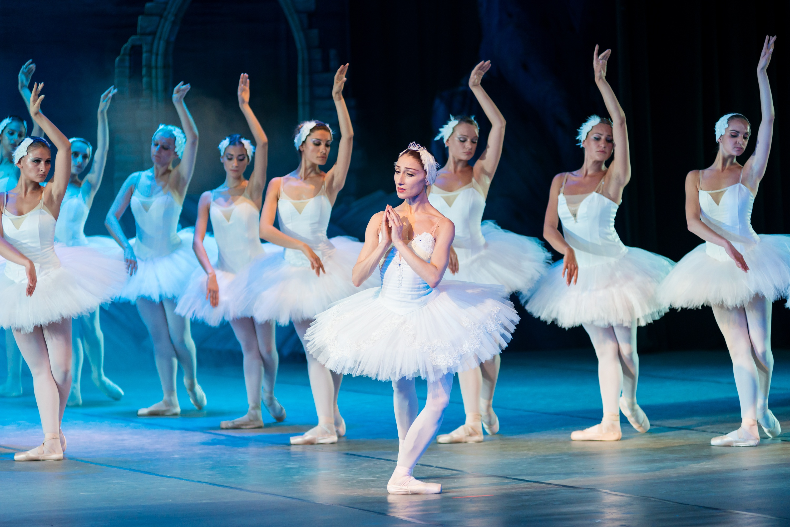
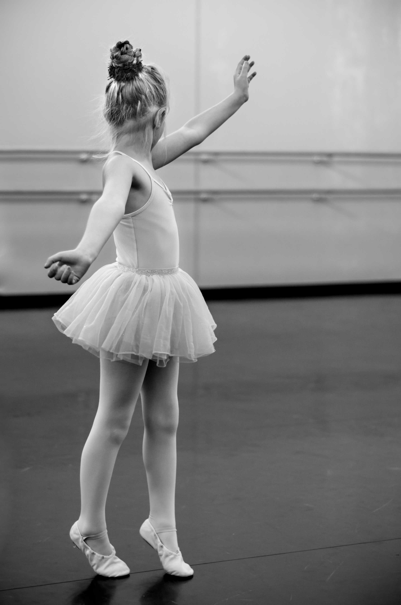
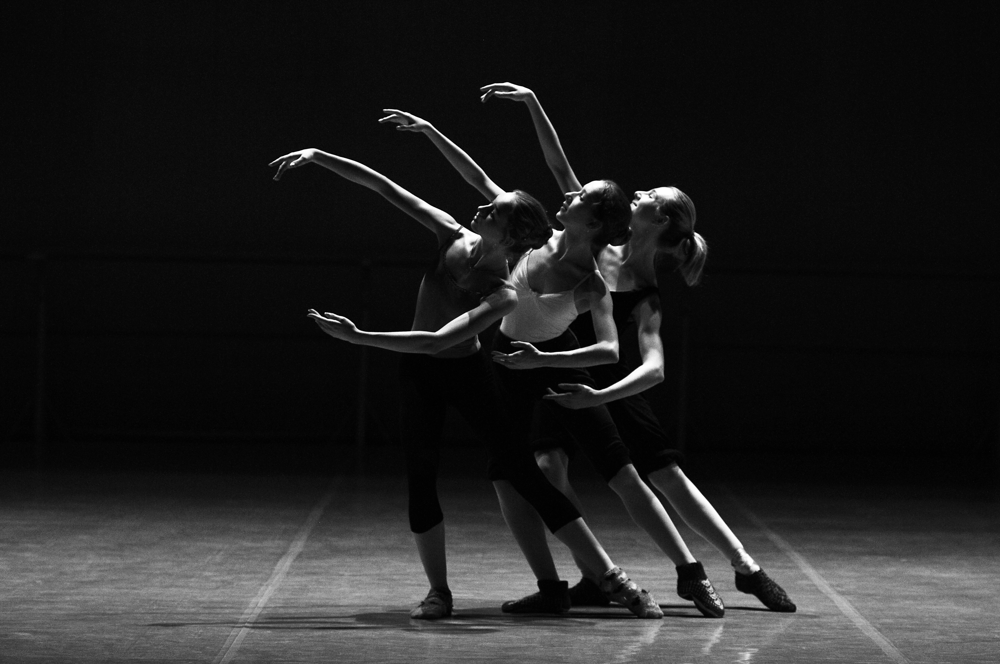
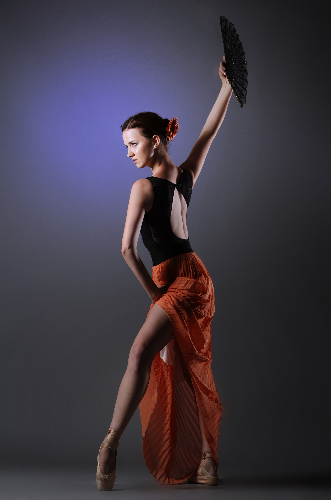

My ballet story begins on the day my parents took me to see Swan Lake at the Rio de Janeiro Ballet at the age of three. It was my first time attending a large performance and I was mesmerized. At the age of five, my parents enrolled me in ballet classes, and I continued to dance for thirteen years. During my time as a dancer I performed in numerous shows, moved into dance forms aside from ballet, learned organizational skills, improved my memorization skills, but most importantly, I learned how to work hard. Ballet and dance in general became a part of my identity, and while I can no longer perform, ballet continues to be a subject that greatly interests me.

The ballet that exists today began during the Renaissance in the 1500s in Italy. The word ballet comes from "ball", masked ball. Catherine de Medici of Italy, introduced the style of dance to France when she married the French King Henry II. Ballet vocabulary was slowly codified in French over the next 100 years. Following the Italy ballet, the French and Russians developed their own styles. Russia became the leading center of ballet by the 1850's. What we know as ballet on pointe today, began in the early 19th century, and was only performed by women. One of the most important figures of ballet in the United States was George Balanchine, who established his own style and founded the world renowned New York City Ballet.
| Ballet Term | English Definition |
|---|---|
| arabesque | A position of the body, in profile, supported on one leg, which can be straight or demi-plié, with the other leg extended behind and at right angles to it, and the arms held in various harmonious positions creating the longest possible line from the fingertips to the toes. The shoulders must be held square to the line of direction. |
| assemblé | Assembled or joined together. It is a step in which the working foot slides well along the ground before being swept into the air. |
| balancé | A rocking step. May be done crossing the foot front or back. |
| cabriole | Caper.It is an allegro step in which the extended legs are beaten in the air. |
| demi-plié | The knees are half bent. |
| entrechat | Interweaving or brading. A step in which the dancer jumps into the air and quickly beats, or crosses the legs before and behind each other. |

The art of ballet requires years of training to perfect technique, but to dance professionally, just practice is not enough. The body of a professional ballerina must be built for ballet. They must be naturally flexible, have long legs and arms, good turn out, and high arches among other things. When little girls audition for the most prestigious ballet companies around the world, they are often turned away because they do not pass the company's physical exam. But if they are accepted, the training is rigorous and can consume an individual's life. To achieve the highest level of ballet, dancers must practice their technique and artistry for several hours every day. Proper technique in ballet is extremely important not only so that the movements look correct, but in order for dancers to avoid injuries. One of the milestones as a dancer is receiving your first pair of pointe shoes.
Learning ballet is wonderful for children even if they never become dancers. It is wonderful ebcause it teaches discipline, grace, and manners.
-Anna Paskevska

Ballet Dictionary. American Ballet Theater. http://www.abt.org/explore/learn/explore-learn-ballet-dictionary/
A Brieft History of Ballet. Atlanta Ballet. https://www.atlantaballet.com/resources/brief-history-of-ballet
12 of the greatest ballerinas of all time. The Telegraph. October 4, 2016. https://www.telegraph.co.uk/dance/what-to-see/12-of-the-greatest-ballerinas-of-all-time/